Walsh Spectrum¶
Description¶
Linear and affine functions are considered as cryptographically weak functions. It is important to measure if a Vector Boolean function has some similarity with these functions. The similarity is measured by means of correlation. The values of Walsh Spectrum provide a measure of the correlation of the Vector Boolean function with the different Vector Boolean Linear functions.
Let be the Walsh-Hadamard matrix of order  , then the vectors associated with its columns constitute an orthogonal basis for over
, then the vectors associated with its columns constitute an orthogonal basis for over  so that:
so that:
Let  , its sequence 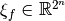 can be defined as a linear combination of the sequences of all the linear functions over
, its sequence 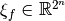 can be defined as a linear combination of the sequences of all the linear functions over  , as they coincide with the rows of .
, as they coincide with the rows of .
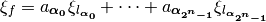
where 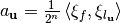
Let a Boolean function , the Walsh Transform of f at  is the n-dimensional Discrete Fourier Transform and can be calculated as follows:
is the n-dimensional Discrete Fourier Transform and can be calculated as follows:
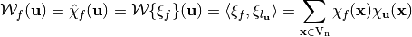
or, as it is most often written as:
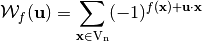
As a result, the Walsh Transform of at  is the coefficient of the sequence of f (
is the coefficient of the sequence of f ( ) with respect to the basis constituted by the sequences of linear functions, scaled by a factor of
) with respect to the basis constituted by the sequences of linear functions, scaled by a factor of  . If 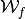 is the Walsh transform of f, we say that and form a Transform pair and write:
. If 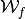 is the Walsh transform of f, we say that and form a Transform pair and write:
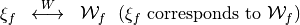
The Walsh Spectrum of f can be represented by a matrix whose rows are indexed by in lexicographic order, denoted by 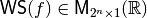 and defined as follows:
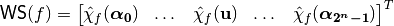
where 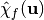 is the value of the spectrum at . A Boolean function is uniquely determined by its Walsh Spectrum.
Let the vector Boolean function  , the Walsh Transform of F is the two-dimensional Walsh Transform defined by:
, the Walsh Transform of F is the two-dimensional Walsh Transform defined by:
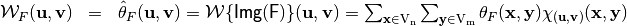
or, as it is most often written as:
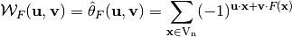
The Walsh Spectrum of F can be represented by a matrix whose rows are indexed by and whose columns are indexed by  in lexicographic order, denoted by 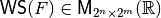 and defined as follows:
in lexicographic order, denoted by 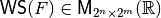 and defined as follows:
![\matr{WS}(F) = \begin{bmatrix} \walsh{\theta}_F(\boldsymbol{\alpha_0},\boldsymbol{\alpha_0})&\dots&\walsh{\theta}_F(\boldsymbol{\alpha_0},\boldsymbol{\alpha_{2^m-1}}) \\
\walsh{\theta}_F(\boldsymbol{\alpha_1},\boldsymbol{\alpha_0})&\dots&\walsh{\theta}_F(\boldsymbol{\alpha_1},\boldsymbol{\alpha_{2^m-1}}) \\
\hdotsfor[2]{3}\\
\walsh{\theta}_F(\boldsymbol{\alpha_{2^n-1}},\boldsymbol{\alpha_0})&\dots&\walsh{\theta}_F(\boldsymbol{\alpha_{2^n-1}},\boldsymbol{\alpha_{2^m-1}}) \\
\end{bmatrix}](../images/math/cd58e17d7a9fcfbf0779c64805eaca8c5dbf6243.png)
where 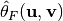 is the value of the spectrum at 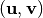.
We can deduce that the columns of this matrix are the spectra of the Boolean functions 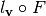 for all the linear functions 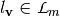.
Library¶
A VBF class can be initialized giving its Walsh Spectrum with the following method:
void putwalsh(const NTL::mat_ZZ& W)
To obtain its representation as Walsh Spectrum the following method must be used:
void Walsh(NTL::mat_ZZ& W, VBF& F)
Example¶
The following program provides the Walsh Spectrum of a Vector Boolean function from its Truth Table.
#include <iostream>
#include <fstream>
#include "VBF.h"
int main(int argc, char *argv[])
{
using namespace VBFNS;
VBF F;
NTL::mat_GF2 T;
ifstream input(argv[1]);
if(!input) {
cerr << "Error opening " << argv[1] << endl;
return 0;
}
input >> T;
F.puttt(T);
input.close();
cout << "The Walsh Spectrum is:" << endl;
cout << Walsh(F) << endl;
return 0;
}
If we use as input of this program the Truth Table of NibbleSub, the output of the program would be the following:
The Walsh Spectrum is:
[[16 0 0 0 0 0 0 0 0 0 0 0 0 0 0 0]
[0 0 -4 -4 0 0 -4 12 4 4 0 0 4 4 0 0]
[0 0 -4 -4 0 0 -4 -4 0 0 4 4 0 0 -12 4]
[0 0 0 0 0 0 0 0 4 -12 -4 -4 4 4 -4 -4]
[0 4 0 -4 -4 -8 -4 0 0 -4 0 4 4 -8 4 0]
[0 -4 -4 0 -4 0 8 4 -4 0 -8 4 0 -4 -4 0]
[0 4 -4 8 4 0 0 4 0 -4 4 8 -4 0 0 -4]
[0 -4 0 4 4 -8 4 0 -4 0 4 0 8 4 0 4]
[0 0 0 0 0 0 0 0 -4 4 4 -4 4 -4 -4 -12]
[0 0 -4 -4 0 0 -4 -4 -8 0 -4 4 0 8 4 -4]
[0 8 -4 4 -8 0 4 -4 4 4 0 0 4 4 0 0]
[0 8 0 -8 8 0 8 0 0 0 0 0 0 0 0 0]
[0 -4 8 -4 -4 0 4 0 4 0 4 8 0 4 0 -4]
[0 4 4 0 -4 8 0 4 -8 -4 4 0 4 0 0 4]
[0 4 4 0 -4 -8 0 4 -4 0 0 -4 -8 4 -4 0]
[0 -4 -8 -4 -4 0 4 0 0 -4 8 -4 -4 0 4 0]
]
We can see that the Walsh Spectrum of 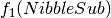 where
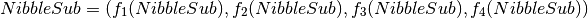
corresponds to the Spectrum of 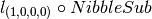. As a consequence, the Walsh Spectrum of coincides with the 9-th column of 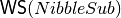, that is, the column indexed by the vector 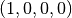.